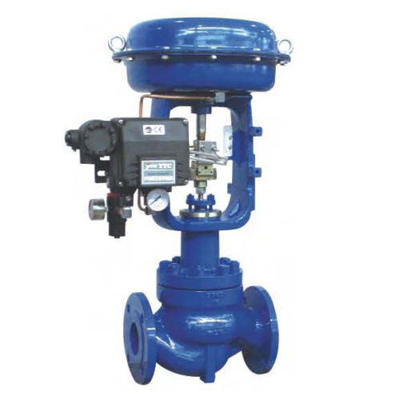

Methods of valve actuation fall into one of the following categories:
1.Linear
2.Part-turn
3.Multi-turn
Each of the above methods can be powered by one of the following sources:
1.Hydraulic
2.Electric
3.Pneumatic
Rotary actuators vary in terms of actuator torque and range of motion. Depending on the valve’s design, the stem may rise during rotation or without rotation. Common ranges of motion include 90-degree (part-turn), 180-, 270-, and 360-degree (multi-turn). As such, rotary actuators may be used for valves such as ball, plug and butterfly.
Linear valve actuators differ in terms of valve stem stroke length, number of turns, and actuator force or seating thrust. The term stroke is used to define the travel required to have the valve fully opened to fully closed. Using an actuator with fewer strokes than the valve will "short stroke" the valve and the full control volume rating of the valve will not be realised.
Linear actuators are used to actuate valves such as gate, globe and diaphragm valves.
Pneumatic supply is generally compressed dry air, but designs are also available for natural gas. Compressor and accumulator design is a consideration when designing a network of pneumatically operated actuators to achieve an efficient system. Valve operating times are also a significant factor when determining the pneumatic capacity of the supply and the size of the tubing.
The principles of operation of a pneumatic actuator are like those of the hydraulic actuator. Each uses some motive force to overcome spring force to move the valve. This allows hydraulic actuators to be designed to fail-open or fail-close depending on their use case.
The actuator must deliver enough torque to move and seat the valvewith the minimum power supply available and also maintain the required position (open, closed, or intermediate) under the worst flowconditions that the valve might experience.
The actuator must be capable of completing the travel, that is, 90°,180°, and multi-turn at the required speed.
The actuator must include a device that prevents excessive forcesbeing applied to the valve under adverse power supply conditions.
The actuators fail-safe position must be considered and appropriate systems put in place to facilitate this.